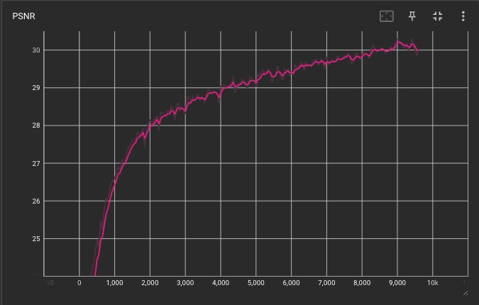
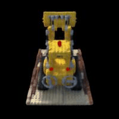

Part 2.1: Create Rays from Cameras
I first implemented a function to convert a pixel coordinate to a ray with an origin and normalized direction using a given camera. To do this, I created some helper functions that perform transformations between the different coordinate frames. In particular, I created functions to:
- transform from camera coordinates to world coordinates using the inverse of the extrinsic matrix — the camera-to-world (c2w) transformation matrix
- transform points in the pixel coordinate system back to the camera coordinate system
The ray origin is simply the translation vector t in the camera's c2w transformation matrix. The ray direction for a pixel (u,v) can be found by choosing a point along this ray with depth equal to 1, finding its coordinate in the world space, and finally normalizing it.
Part 2.2: Create Rays from Cameras
Next, I built on these functions to create ray sampling methods. I trained using a batch size of 10k rays, where the rays were created using the previously mentioned methods after randomly sampling 10k pixels globally across the training set of 100 images. To speed up training, I precomputed all the rays and pixel coordinates at the start.
We also need to discretize each ray into samples so that we can query points along the ray and integrate their colors to get the final color rendered at a particular pixel. To do this, I uniformly sampled points on the ray (t = np.linspace(near, far, n_samples), where near=2.0, far=6.0, and n_samples=64. The actual 3D coordinates were x = r_o + r_d * t, where r_o is the ray origin and r_d is the ray direction. However, this would lead to a fixed set of 3D points always being queried, which could potentially lead to overfitting and poor results on new cameras in the test set. As such, to regularize training, I introduced some small perturbations to the points, so that every location along the ray would be touched upon during training. This was done by setting t = t + np.random.rand(t.shape) * t_width, thereby adding Uniform(0,1) noise to each point.
Part 2.3: Putting the Dataloading All Together
I wrapped all of this functionality into a dataloader that randomly sampled pixels from multiview images. The following are some sanity checks to verify the correctness of my sampling code.
Part 2.4: Neural Radiance Field
I implemented the network to predict the density and color of points. The network used was similar to the MLP in Part 1 but with increased inputs (3D world coordinates and a 3D view direction) and increased outputs (RGB color and density). Due to the more challenging task of creating a 3D representation, I used a deeper network. A ReLU activation function was used before outputting density to constrain it to be positive, and a Sigmoid was used before outputting RGB values to keep colors between [0,1]. The following is the architecture used:

Part 2.5: Volume Rendering
Once we use our network to query the colors and density of points along a ray, we need to integrate the colors to get the actual color for that pixel. This means that at every small step dt along the ray, we add the contribution of that small interval [t, t+dt] to that final color.
The tractable discrete approximation of this equation can be stated as the following, where c_i is the color, sigma_i is the density, and delta_i is the interval width:

To vectorize the computation, I used torch.comprod to calculate T_i. The delta_i's were found by using the intervals defined by t from before.
Results
I trained using an Adam optimizer with a learning rate of 5e-4 with a batch size of 10k rays. The following is a visualization of the rendering of validation views 3 and 0 over training:
PSNR Curve
The following is the PSNR curve averaged across 6 of the validation images. Training crashed after 9700 iterations, but reached the target of a 30 PSNR.

Final Rendering
With the trained network, I rendered novel views of the Lego truck from new camera extrinsics, chosen to circle around the Lego truck. This creates the following spherical rendering:
